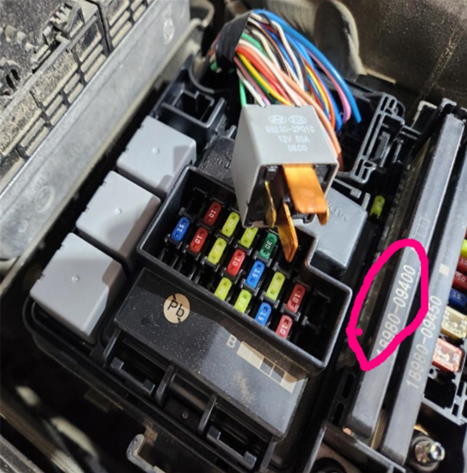

안녕하세요. 오픈링크 차량관리팀입니다.
더뉴 그렌저 IG (PE) 모델의 블로워가 동작하지 않는다는 정비 문의 시 ,
엔진룸 퓨즈박스의 멀티퓨즈 ( 18980-09400 ) 확인 후 퓨즈가 탔는지 점검합니다.
퓨즈가 탔다고 하더라도 , 열받지 않은 상태에서는 블로워모터가 동작할수 있다고 하며 , 멀티퓨즈가 탔다면 배선까지 수정해야 하므로 배선까지 같이 주문하여 배선작업(납떔)도 진행해야 합니다.
[부품] 멀티퓨즈 : 18980-09400
[부품] 냉각팬 배선 : 18980-G8100FFF
[부품] 블로워 배선 : 18980-G8200FFF
* 배선 부품은 한가닥으로 나오며 블로워 모터쪽만 탔더라도 두개 다 주문하여 교체하는게 좋습니다.

엔진룸 퓨즈박스의 사진입니다. 표시된 09400 멀티퓨즈를 확인합니다.

18980-09400 멀티퓨즈의 해당 부분을 확인합니다.
감사합니다.